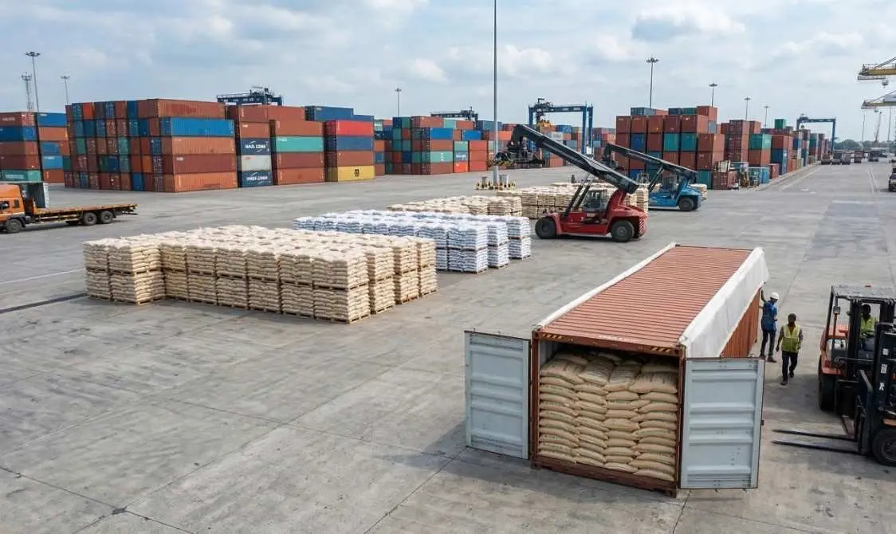

Export Packaging Bags for Indian Exporters
Export quality polypropylene woven bags, anti slip polybags and BOPP laminated bags for Indian companies exporting rice, spices, chemicals, minerals and agricultural products to global markets. Manufactured to meet international packaging and shipping standards.
Bag TypesAnti Slip, BOPP Laminated, PP Woven
Available Sizes25 KG, 50 KG, Custom
Anti SlipYes — For Safe Palletizing
PrintingExport Markings & Brand
QualityExport Standard
SupplyAll Export Ports — Pan India